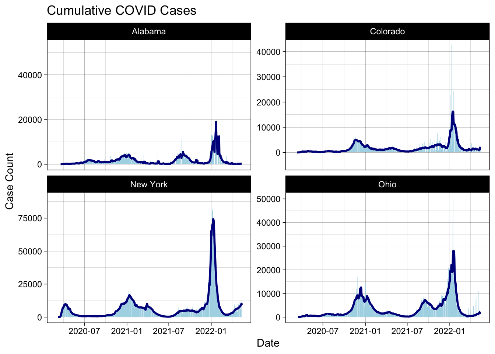
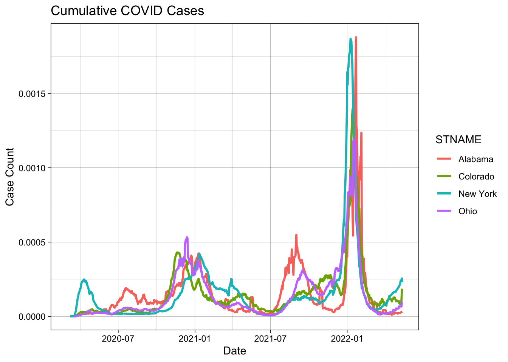
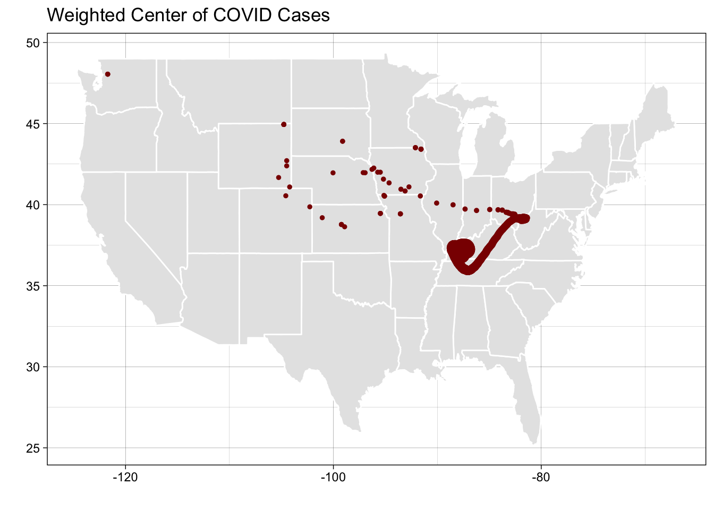
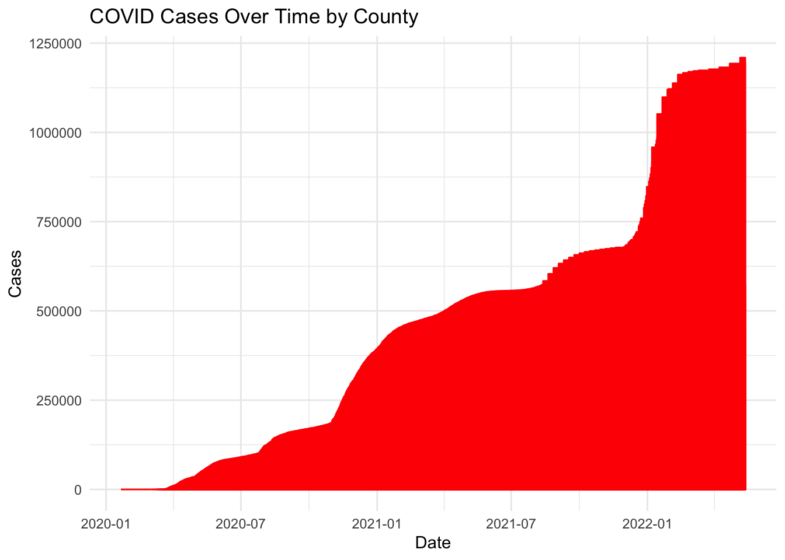
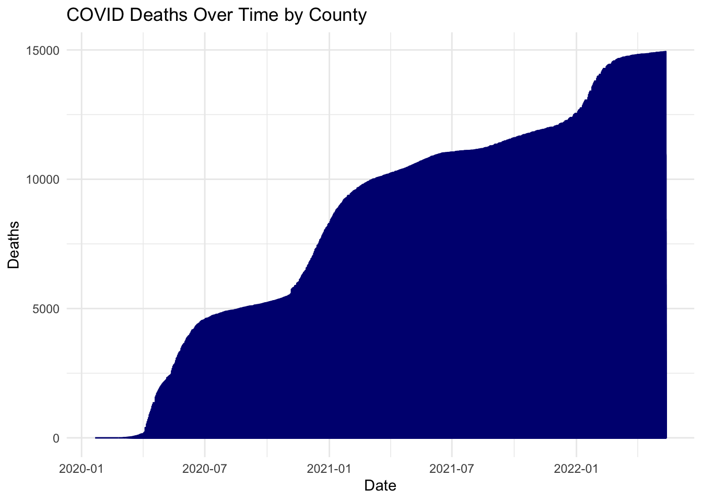
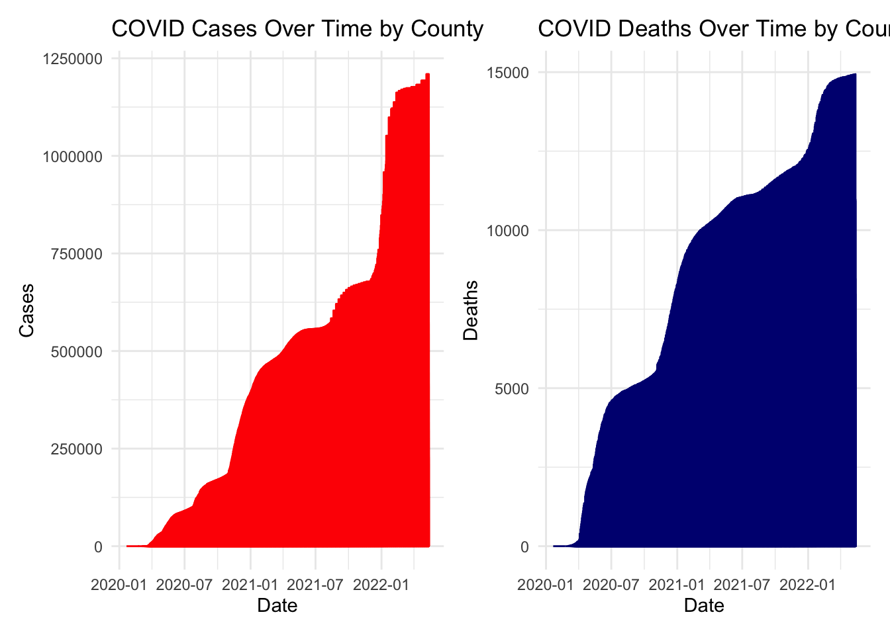

── Conflicts ────────────────────────────────────────── tidyverse_conflicts() ──
✖ purrr::compose() masks flextable::compose()
✖ dplyr::filter() masks stats::filter()
✖ dplyr::lag() masks stats::lag()
ℹ Use the conflicted package (<http://conflicted.r-lib.org/>) to force all conflicts to become errors
Rows: 2502832 Columns: 6
── Column specification ────────────────────────────────────────────────────────
Delimiter: ","
chr (3): county, state, fips
dbl (2): cases, deaths
date (1): date
ℹ Use `spec()` to retrieve the full column specification for this data.
ℹ Specify the column types or set `show_col_types = FALSE` to quiet this message.
Rows: 3195 Columns: 67
── Column specification ────────────────────────────────────────────────────────
Delimiter: ","
chr (5): SUMLEV, STATE, COUNTY, STNAME, CTYNAME
dbl (62): REGION, DIVISION, ESTIMATESBASE2020, POPESTIMATE2020, POPESTIMATE2...
ℹ Use `spec()` to retrieve the full column specification for this data.
ℹ Specify the column types or set `show_col_types = FALSE` to quiet this message.
#Create five digit FIPS and only keep "NAME" and "2021" pop_data <-read.csv(pop_url) %>%filter(COUNTY !=0) %>%mutate(fips =paste0(sprintf("%02d", STATE), sprintf("%03d", COUNTY))) %>%select(fips, contains('NAME'), contains('2021'))#What is the range of populations seen in Colorado counties in 2021: pop_data %>%filter(STNAME =="Colorado") %>%filter(POPESTIMATE2021 ==max(POPESTIMATE2021) | POPESTIMATE2021 ==min(POPESTIMATE2021)) %>%select(POPESTIMATE2021) %>%flextable()
POPESTIMATE2021
737,287
741
#The range is a maximum of 737,287 and a minimum of 741.#Join the population data to the Colorado COVID data and compute per capita cumulative cases, new cases, new deaths perCap =inner_join(colorado, select(pop_data, fips, pop = POPESTIMATE2021), by ='fips') %>%mutate(cumPerCap = cases/pop, newCasesPerCap = new_cases/pop, newDeathsPerCap = new_deaths/pop)
#Top 5 counties with the most cumulative cases per capitaperCap %>%filter(date == my.date) %>%arrange(desc(cumPerCap)) %>%select(county, cumPerCap) %>%slice_head(n =5) %>%flextable() %>% flextable::set_caption("Top 5 Counties with the Most Cumulative Cases")
county
cumPerCap
Crowley
0.5117698
Bent
0.4118749
Pitkin
0.3429659
Lincoln
0.3424082
Logan
0.3047701
#Top 5 counties with the most new cases per capitaperCap %>%filter(date == my.date) %>%arrange(desc(newCasesPerCap)) %>%select(county, newCasesPerCap) %>%slice_head(n =5) %>%flextable() %>% flextable::set_caption("Top 5 Counties with the Most New Cases")
#The top five counties with the most new cases per 100000 people are Mineral, Boulder, Larimer, Denver, and Jefferson.
Question 5:
library(dplyr)covid_death_ratio <- perCap %>%filter(date >="2021-01-01"& date <="2021-12-31") %>%inner_join(pop_data, by ="fips") %>%group_by(county) %>%summarize(total_covid_deaths =sum(new_deaths, na.rm =TRUE), total_deaths =first(DEATHS2021)) %>%mutate(covid_death_percentage = (total_covid_deaths / total_deaths) *100) %>%filter(covid_death_percentage >=20)library(ggplot2)ggplot(covid_death_ratio, aes(x = county, y = covid_death_percentage, fill = county)) +geom_col() +labs(title ="Counties Where COVID Deaths Are 20% or More of Annual Deaths in 2021",x ="County",y ="COVID Death Percentage (%)") +theme(legend.position ="none")
`summarise()` has grouped output by 'date'. You can override using the
`.groups` argument.
ggplot(state_covid, aes(x = date)) +geom_col(aes(y = newCases), fill ="lightblue", col =NA) +geom_line(aes(y = roll), col ="darkblue", size =1) +theme_linedraw() +facet_wrap(~state, nrow =2, scales ="free_y") +labs(title ="Cumulative COVID Cases",x ="Date", y ="Case Count")
Warning: Using `size` aesthetic for lines was deprecated in ggplot2 3.4.0.
ℹ Please use `linewidth` instead.
Warning: Removed 4 rows containing missing values or values outside the scale range
(`geom_col()`).
Warning: Removed 7 rows containing missing values or values outside the scale range
(`geom_line()`).

pp = pop %>%group_by(STNAME) %>%summarise(state_pop =sum(POPESTIMATE2021)) %>%inner_join(state_covid, by =c("STNAME"="state")) %>%mutate(perCap = newCases / state_pop) %>%group_by(STNAME) %>%mutate(roll = zoo::rollmean(perCap, k =7, align ="right", fill =NA)) %>%ungroup()ggplot(pp, aes(x = date)) +geom_line(aes(y = roll, col = STNAME), size =1) +theme_linedraw() +labs(title ="Cumulative COVID Cases", x ="Date", y ="Case Count")
Warning: Removed 28 rows containing missing values or values outside the scale range
(`geom_line()`).

#By scaling the population, I think it definitely helps create a more proportional picture of how the deaths relate to the population. For example, in the earlier graph New York seems to have a much bigger peak than Alabama, but in the later graph these two states seem about equal. I think scaling helps to put the data in context and make it more nuanced with the provided information.
Question 7:
location =read.csv('https://raw.githubusercontent.com/mikejohnson51/csu-ess-330/refs/heads/main/resources/county-centroids.csv')covid_data <- covid_data %>%mutate(fips =as.character(fips))location <- location %>%mutate(fips =as.character(fips))meta =inner_join(covid_data, location, by ="fips") %>%group_by(date) %>%summarise(wmX_c =sum(LON*cases) /sum(cases),wmY_c =sum(LAT*cases) /sum(cases),cases =sum(cases)) %>%arrange(date) %>%mutate(d =1:n())ggplot(meta) +borders("state", fill ="gray90", colour ="white") +geom_point(aes(x = wmX_c, y = wmY_c, size = cases), color ="darkred", alpha =25) +theme_linedraw() +labs(color ="Time", size ="Cases", x ="", y ="", title ="Weighted Center of COVID Cases") +theme(legend.position ="none")

#The movement of COVID-19 was mostly in one area before moving steadily and then dispersing into many different areas suddenly. One possible driver is a superspreader event; in the area where there is a large amount of dots, Kentucky, it is possible that there was a large event where multiple people got sick. Then this cohort moved together across multiple states, before dispersing back to their own and spreading COVID through there.
graph_cases <- weighted_data %>%group_by(county) %>%ggplot(aes(x = date, y = cases)) +geom_line(color ="red") +labs(title ="COVID Cases Over Time by County", x ="Date", y ="Cases") +theme_minimal()print(graph_cases)

graph_deaths <- weighted_data %>%group_by(county) %>%ggplot(aes(x = date, y = deaths)) +geom_line(color ="navy") +labs(title ="COVID Deaths Over Time by County", x ="Date", y ="Deaths") +theme_minimal()print(graph_deaths)

library(patchwork)graph_cases + graph_deaths

#While my cases plot has steep jumps every so often, my deaths plot is more steady and flat. This could mean that while COVID is still spreading rapidly with spikes whenever there is a new variant, our abilities to treat patients and avoid fatalities is keeping up for the most part.